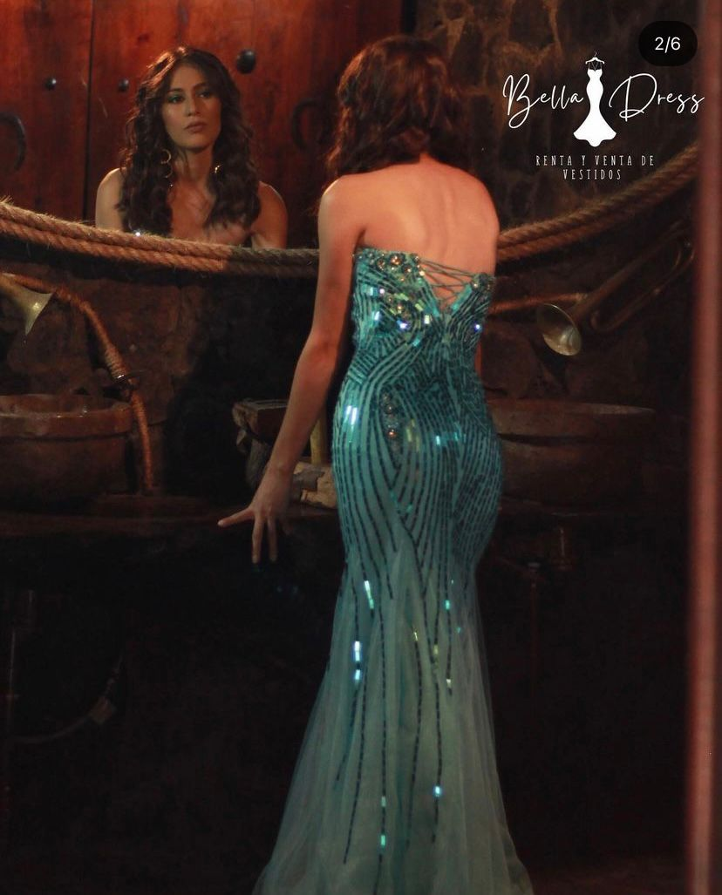
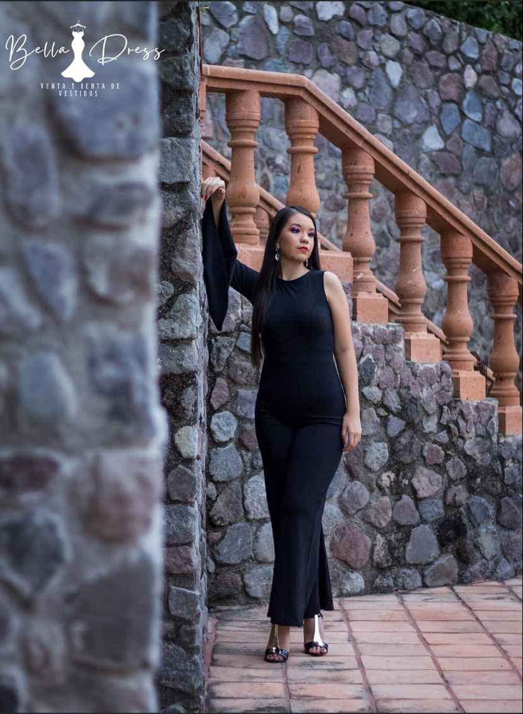

Mision
Mision

¿Cual es la razon de ser de la empresa?
La principal meta del negocio es cubrir la necesidad de lo que significa el vestido en un evento importante para nosotras
las mujeres y lo mejor a un precio muy minimo del costo real de un vestido. Por eso la opcion de la renta.
¿Por que tu organizacion tiene esa labor especifica?
La labor especifica de bella dress es la renta, como una opcion mas para todas
las mujeres que queremos vernos bien en algun evento y no gastar en una prenda que usualmente no volvemos a utilizar.

¿Que hace la empresa?
Llevamos lo mas reciente de moda a nuestras clientas, lo que nuestra empresa hace
es traer vestidos de todo tipo de diseno y cumplir la necesidad que se pida con lo largo del tiempo.
¿Hacia que publico objetivo se dirige?
El publico objetivo son desde adolescentes hasta mujeres de cualquier edad.
¿Cual es su ventaja competitiva?
Se rentan mas los vestidos de calidad y precio medio a alto porque
obviamente son los que son mas procesados y con caracteristicas mas lujosas, y al ser importados no son comunes dentro del mercado
local de renta de vestidos, lo cual les da la certeza a las clientas que no va a encontrar a alguien mas en su evento con el mismo vestido.